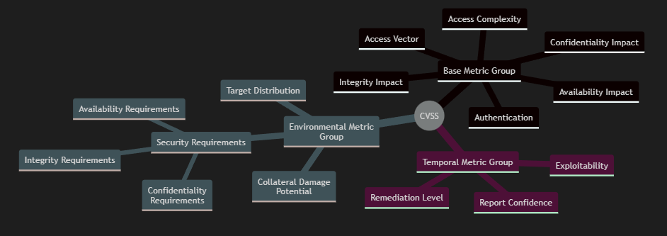

Security Vulnerabilities
This section is dedicated to material related to security vulnerabilties, for the awareness and development of secure practises.
Vulnerabilty Databases
- Mitre ATT&CK - ATT&CK is a database of knowledge related to the security of enterprises, mobiles and industrial contol systems. It includes knowledge on adversary's tactical goals, techniques, and ways to mitigate them.
- Mitre Common Weakness Enumeration (CWE) - CWE is a community-developed database of security vulnerabilities, trusted by security foundations such as OWASP.
Software Vulnerabilties
Glossary
Software Vulnerability
"A security flaw, glitch, or weakness found in software code that could be exploited by an attacker." ( NIST, 2019 )
Readings
- Cifuentes, C. & Bierman, G (2019) What is a Secure Programming Language?. Available from: here. - Cifuentes and Bierman identify three categories of common vulnerabilities that they argue could be prevented through programming language design. Those vulnerabilities are: buffer errors, injection errors and informtion leak errors.
Security Metrics
Examples
Common Vulnerability Scoring System (CVSS)
"CVSS is composed of three metric groups: Base, Temporal, and Environmental, each consisting of a set of metrics." ( Mell et al., 2007 )
"CVSS is well suited as a standard measurement system for industries, organizations, and governments that need accurate and consistent vulnerability severity scores." ( NIST )
I've left out the specific details constituting each individual metric, as they are well documented in the CVSS specification. Nevertheless, this example serves to illustrate the existence of standardised security metrics.
Readings
- Butler, S. (2002) 'Security Attribute Evaluation Method: A Cost-Benefit Approach'. Proceedings of the 24th International Conference on Software Engineering. Orlando Florida, USA, 2002. IEEE. 2002. Butler compares a selection of security designs, by using the Security Attribute Evaluation Model (SAEM), consisiting of benefit assessment, threat index evaluation, coverage assessment and cost analysis. Benefits can include protection, detection or recovery mechanisms, and threat indexes are calculated using threat frequencies and outcomes (via multiattribute risk analysis).
- Fenton, N & Bieman, J. (2015) '10.5 Security Measures', in: Fenton, N & Bieman, J. (2015) Software metrics: a rigorous and practical approach. 3rd ed. Boca Raton: CRC Press. 475-523. ISBN 9780367659028 - Fenton and Biemann include a section specifically about security metrics that are useful in a goal-based project framework.
- Manadhata, P. & Wing, J. (2011) An Attack Surface Metric. IEEE Transactions on Software Engineering. 37(3): 371-386. Manadhata and Wing present an attack surface metric based on an entry and exit point framework. The framework is formally modelled as an I/O automaton.
- Mell, P., Scarfone, K. & Romanosky, S. (2007) A Complete Guide to the Common Vulnerability Scoring System Version 2.0. Available from: here. Mell et al. present an outline for a security metric built from a suite of metrics, called the common vulnerability scoring system (CVSS).